| 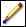 | Pencil—Draws individual pixels in the Line Color you specify. |
| 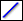 | Line—Draws a line in the Line Color you specify. |
| 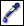 | Dropper—Sets the Line Color to the color of a pixel you left-click or the Fill Color to the color of a pixel you right-click. Press the <Ctrl> key while using the Pencil, Line, Rectangle, Filled Rectangle, Ellipse, or Filled Ellipse tool to switch to the Dropper tool temporarily. |
| 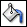 | Fill—Fills all connected pixels of the same color with the Line Color. |
| 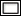 |
Rectangle—Draws a rectangular border in the Line Color. Double-click this tool to add a one-pixel border to the entire icon in the Line Color. |
| Filled Rectangle—Draws a rectangle with a border in the Line Color and filled in the Fill Color. Double-click this tool to add a one-pixel border to the entire icon in the Line Color and to fill the icon in the Fill Color. |
| 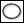 | Ellipse—Draws an elliptical border in the Line Color. |
| 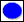 | Filled Ellipse—Draws an ellipse with a border in the Line Color and filled in the Fill Color. |
| 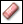 | Eraser—Draws individual pixels as transparent. |
| Text—Enters text at the location you specify. While text is active, you can move the text by pressing the arrow keys.
Double-click this tool to display the Text Tool page of the Icon Editor Properties dialog box. Use this page to specify the font, alignment, and font size of the text you enter with the Text tool. |
| 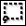 | Select—Selects an area of the icon to cut, copy, or move. Double-click this tool to select the entire icon.
 |
Note You can cut, copy, or move pixels only from user layers. |
|
| 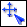 | Move—Moves all pixels in the user layer you select. Use the Select tool to move pixels from multiple user layers at once. |
| Horizontal Flip—Horizontally flips the user layer you select. If you do not select a layer, this tool flips all user layers.
|
Note You also can press the <F> key to flip a user layer you select. |
|
| 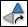 | Clockwise Rotate—Rotates the user layer you select in a clockwise direction. If you do not select a layer, this tool rotates all user layers.
|
Note You also can press the <R> key to rotate a user layer you select. |
|
| 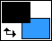 | Line Color/Fill Color/Swap Colors—Specifies the color to use for lines or borders and for fill areas. Click the Line Color rectangle or the Fill Color rectangle to access a color picker from which you can select new colors. Click the Swap Colors arrows to interchange the Line Color and Fill Color. |